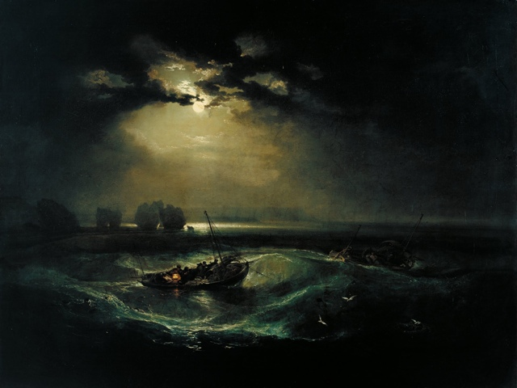
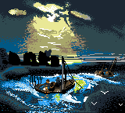
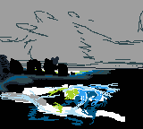

I learned about the artist J. M. W. Turner
last month through the Google
Art Project New Chrome Tab extension. He is known as “the painter
of light” and after looking at some of his works, I agree with that
statement.

Seeing the great use of light in J. M. W. Turner's Fishermen at Sea, I
decided I'd try emulating it but in pixel art style. This was a lot more
ambitious than my previous works, and it definitely stretched my skills. It
took a month of drawing sessions (mostly in the morning on the couch at
breakfast), but I finally finished it.

It really made me appreciate how J. W. M. Turner must have spent even
more time and had even more skill to create such a beautiful, realistic
scene using paint.
